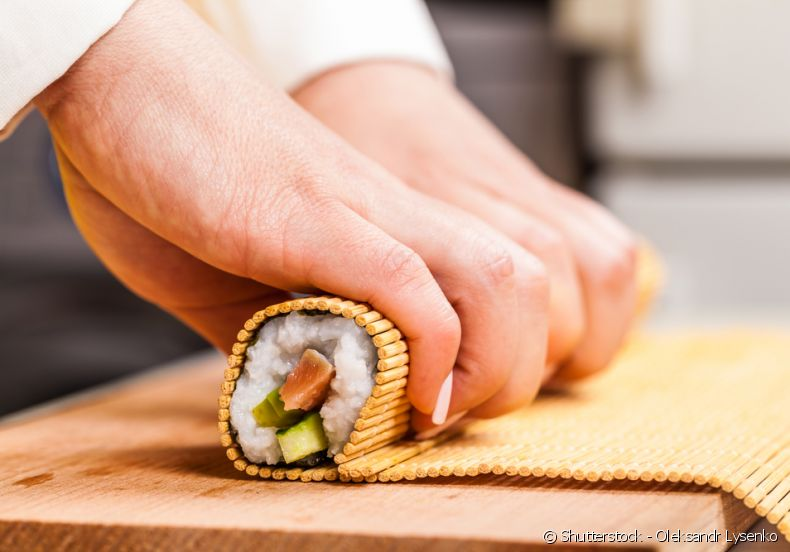

BEM VINDO, AO SUSHI DESTROY
Respeitar a tradição é a certeza de utilizar um conhecimento milenar na preparação de seus pratos.
Seleção nos ingredientes, cuidado no preparo e atenção no atendimento. Essa é a nossa receita.
Contando hoje com uma unidade, o restaurante SUSHI DESTROY tem por filosofia servir produtos de
primeira qualidade. Sempre com decoração típica e aconchegante, as casas possuem um Sushi Bar que
permite aos clientes observar como está sendo preparada a refeição. No SUSHI DESTROY, a estrela da
casa são os pratos!Totalmente profissionalizado, o restaurante incorporou novos métodos de preparo
e reestruturou seu ambiente, para melhor acomodar o maior volume de clientes.
Entregas em toda Americana
